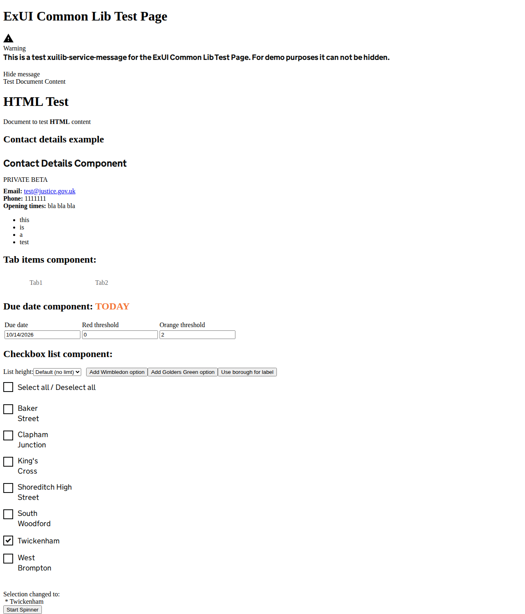

Accessibility score 97; WebApp reference threshold 90. All failed audits remain findings even above the threshold.
URL: http://localhost:4200/home
Lighthouse is intentionally scoped to stable representative pages in this pack. Axe and WAVE-like checks provide the broader page-state sweep.
